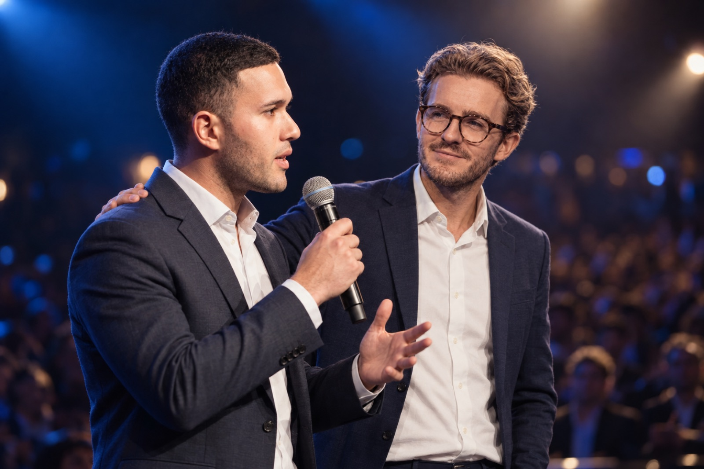
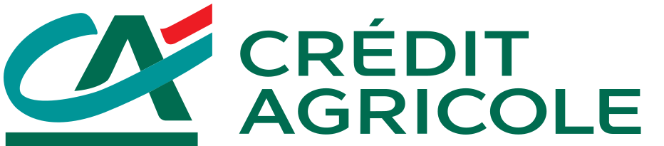

Stratégie
Clément Predo
ESSEC. Toujours intéressé par la tech, mais un profil plus business. Issu de cabinet de conseil, une vision reliée à l'IA. Formateur et conférencier.
linkedin.com/in/clement-predo
Axem IA, le duo
Depuis 2023, ils forment et accompagnent les entreprises à l'IA, ensemble.
Pionniers dès 2023, quand beaucoup ne comprenaient pas encore l'IA générative. Ils testent en continu les nouveaux outils, font leur veille, et ne comptent pas s'arrêter là.
Scène 01
Scène 02
Scène 03
Scène 04
Ils testent les nouveaux outils en permanence.
Scène 05
Ils publient plusieurs fois par semaine, surtout sur Claude.
Stratégie
ESSEC. Toujours intéressé par la tech, mais un profil plus business. Issu de cabinet de conseil, une vision reliée à l'IA. Formateur et conférencier.
linkedin.com/in/clement-predoTechnique
Télécom Paris (Institut Polytechnique de Paris). Plus tech. Des missions de développement IA au sein de banques françaises, responsable IA et automatisations. Spécialisé dans les systèmes IA pour le private equity, le M&A et la finance de marché. Formateur et conférencier.
linkedin.com/in/alexiszeitounIls se rencontrent en double master, ESSEC et Télécom Paris (Institut Polytechnique de Paris). Ensemble, ils fondent Axem IA.
Deux visions, et après ça merge en une.
Clément Predo, co-fondateur d'Axem IA





Tour 21 : Le duo, proposition 3 RejouerToutes les propositions